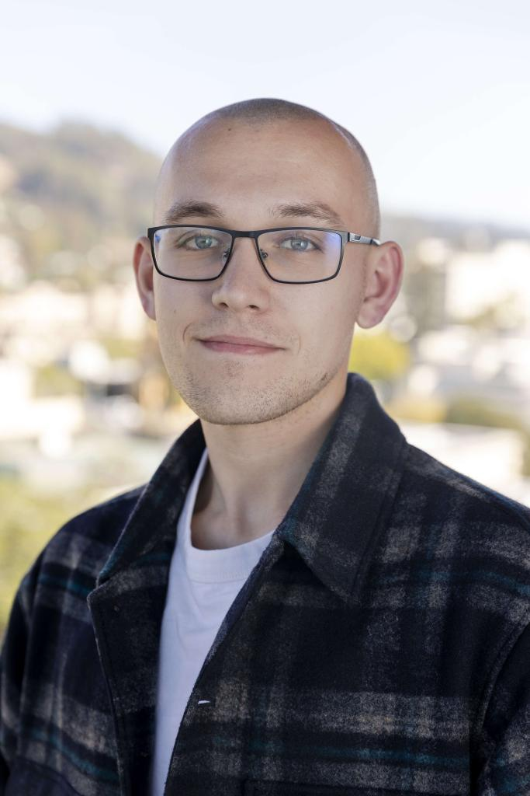

I am a Ph.D. candidate in Political Science at the University of California, Berkeley.
I study state formation and state capacity, with a particular interest in fiscal and bureaucratic development in weak states. My work spans a wide range of settings, from eighteenth-century France to the Russian Empire and imperial Ethiopia.
My dissertation examines the interaction between public participation and the development of state capacity. I am interested in the tools weak states use to draw their subjects into the work of the state: when instruments such as local assemblies, communal resource management and tax farming deliver the intended results, and when they backfire instead, entrenching state scarcity and underdevelopment and provoking new conflict and unrest.
I received my B.A. in Political Science, with honors, from the National Research University Higher School of Economics in Moscow in 2022. Before coming to Berkeley, I worked as a data scientist at the Center for Advanced Governance in Moscow, using micro-level administrative data to design a better system of unemployment benefits.

Curriculum Vitae
Education
- Ph.D., Political Science · University of California, Berkeley · 2022–present
- B.A., Political Science (Political Analysis), with honors · Higher School of Economics, Moscow · 2018–2022
- Minor, Intelligent Data Analysis · Higher School of Economics · 2019–2021
Fellowships, grants and awards
- APSA Doctoral Dissertation Research Improvement Grant · 2026
- James Goldgeier Fellowship for International Research · 2026
- Reinhard Bendix and Allan Sharlin Fellowships · 2026
- Institute for Humane Studies Fellowship · 2026
- Best Ph.D. Student Paper Award, International Tax and Public Finance · 2025
- Finalist, CESifo Award in Public Economics · 2025
- Selected for the NBER Summer Institute, Political Economy · 2025
- ISEEES Academic Year Dissertation Fellowship · 2025
- Simpson Pre-Dissertation Fellowship · 2024
- BESI Political Economy Conference Travel Grant · FY 2024
- BESI Political Economy Research Award · 2023–24, 2024–25
- ISEEES Summer Research Fellowship · 2023, 2024
- Political Economy Scholars Small Research Grant, Designated Emphasis in Political Economy · 2023
Previously
- Junior Data Analyst · Center for Advanced Governance, Moscow · 2021–22
- Research Assistant · International Center for the Study of Institutions and Development, HSE · 2020–21
- Research Assistant · Department of Theoretical Economics, HSE · 2020–21